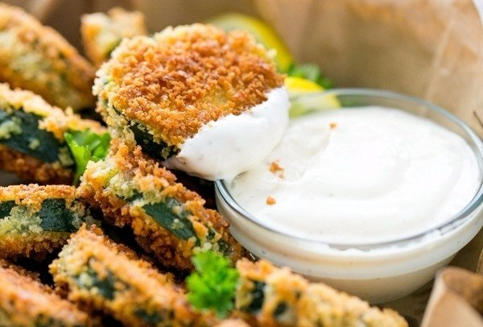

Кусочки кабачков в кляре (6 порций)
ИНГРЕДИЕНТЫ
- 2–3 средних кабачка
- ½ стакана муки
- ¼ ч. л. перца
- 2 яйца
- 1 ст. панировочных сухарей
- масло (по вкусу)
- соль (по вкусу)
ПРИГОТОВЛЕНИЕ
- Нарежь кабачки кружочками.
- Разложи по широким мискам или тарелкам: яйца, муку с перцем и панировку.
- Обмакни кабачок сначала в муку, затем в яйцо и в панировку.
- Обжаривай в масле с двух сторон.
- Подавай с соусом.